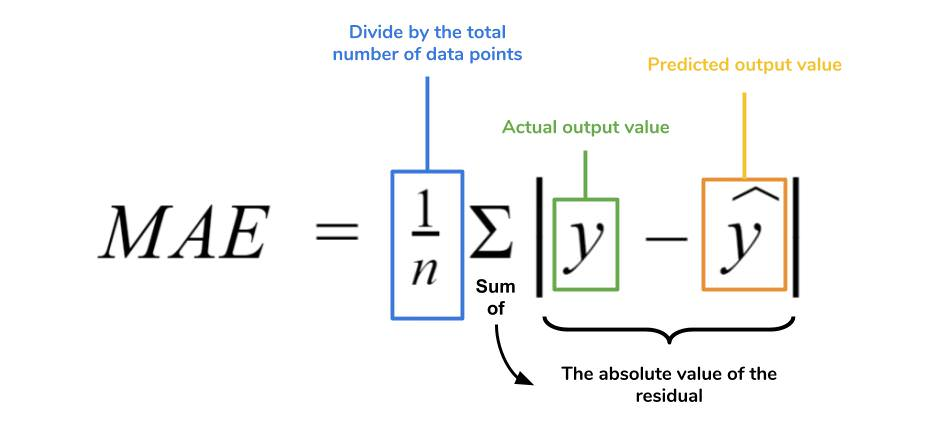
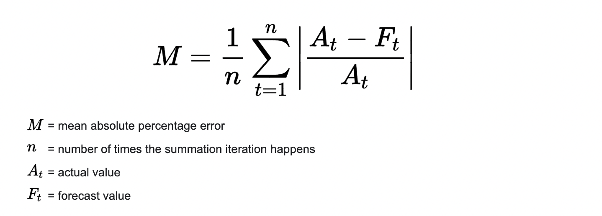
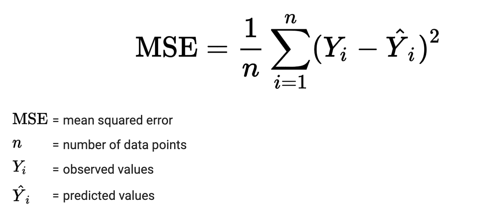
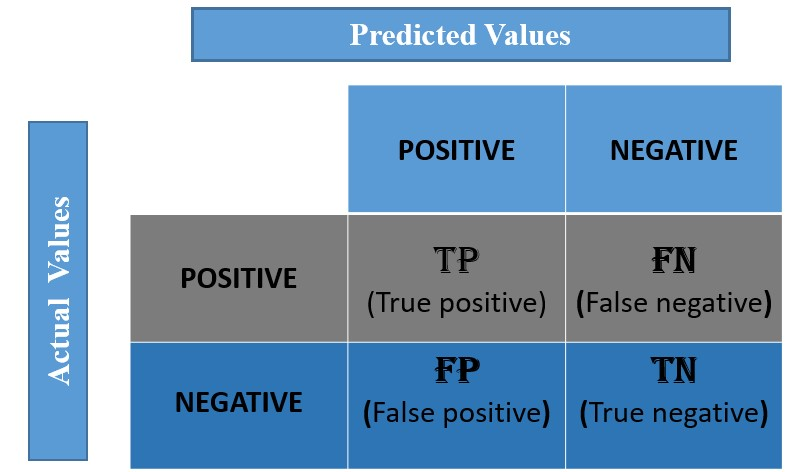
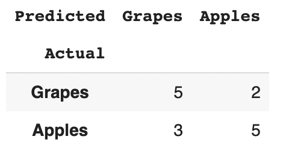

1.2. Performance Metrics for ML and DL models
Contents
1.2. Performance Metrics for ML and DL models#
Why We require Evaluation Metrics?#
Any model in real world cannot have 100% efficiency otherwise the model is known as a biased model. Although it is necessary to obtain the accuracy on training data, it is also important to get a genuine and approximate result on unseen data otherwise Model is of no use.
So to build and deploy a generalized model we require to Evaluate the model on different metrics which helps us to better optimize the performance, fine-tune it, and obtain a better result. So, let’s start exploring different Evaluation metrics.
A) Evaluation Metrics for Regression#
Suppose we have the actual (\(y\)) and the predicted (\(\hat{y}\)) values of the target variable \(y\) (from any model) and we want to evaluate it using different metrics
actual = [1,2,3,4,5,6]
predicted = [1,3,4,4,5,9]
1) Mean Absolute Error (MAE)#
MAE is a very simple metric which calculates the absolute difference between actual and predicted values. Basically, sum all the errors and divide them by a total number of observations and this is MAE.

Advantages of MAE
The MAE you get is in the same unit as the output variable
It is most Robust to outliers
Disadvantages of MAE
The graph of MAE is not differentiable so we have to apply various optimizers like Gradient descent
import numpy as np
def mae(actual, predicted):
actual, predicted = np.array(actual), np.array(predicted)
return np.mean(np.abs(actual - predicted))
print("MAE =", round(mae(actual, predicted),3))
MAE = 0.833
2) Mean Absolute Percentage Error (MAPE)#
MAPE is the mean absolute percentage error, which is a relative measure that essentially scales MAE to be in percentage units instead of the variable’s units.

Advantages of MAPE
It is one of the most widely used measures of forecast accuracy, due to its advantages of scale-independency and interpretability.
Disadvantages of MAPE
It has the significant disadvantage that it produces infinite or undefined values for zero or close-to-zero actual values
import numpy as np
def mape(actual, predicted):
actual, predicted = np.array(actual), np.array(predicted)
return np.mean(np.abs((actual - predicted)/actual))
print("MAPE =", round(mape(actual, predicted),3))
MAPE = 0.222
3) Mean Squared Error (MSE)#
MSE is a most used and very simple metric with a little bit of change in mean absolute error. Mean squared error states that finding the squared difference between actual and predicted value.

Advantages of MSE
The graph of MSE is differentiable, so you can easily use it as a loss function
Disadvantages of MSE
The value you get after calculating MSE is a squared unit of output. for example, the output variable is in meter(m) then after calculating MSE the output we get is in meter squared
If you have outliers in the dataset then it penalizes the outliers most and the calculated MSE is bigger. So, in short, It is not robust to outliers which were an advantage in MAE
import numpy as np
def mse(actual, predicted):
actual, predicted = np.array(actual), np.array(predicted)
return np.mean((actual - predicted)**2)
print("MSE =", round(mse(actual, predicted),3))
MSE = 1.833
4) Root Mean Squared Error (RMSE)#
As the name itself suggests, RMSE is simply the square root of MSE

Advantages of RMSE
The output value you get is in the same unit as the required output variable which makes interpretation of loss easy.
Disadvantages of MSE
It is also not that robust to outliers as compared to MAE.
import numpy as np
def rmse(actual, predicted):
actual, predicted = np.array(actual), np.array(predicted)
return np.sqrt(np.mean((actual - predicted)**2))
print("RMSE =", round(rmse(actual, predicted),3))
RMSE = 1.354
5) Coefficient of Determination (R-squared or \(R^2\))**#
Coefficient of Determination or R-squared value measures the strength of the relationship between your linear model and the dependent variables on a 0 - 1 scale. It represents the proportion of the variance for a dependent variable that’s explained by an independent variable.
y = actual output#
\(\hat y\) = predicted output#
\(\bar y\) = mean value of y#
n = number of samples or data points#
How to interpret \(R^2\) value
Now if this \(R^2\) score is 0, then there is no correlation between \(y\) and \(\hat y\) and if it is 1, then we have 100% correlation between these values (best model).
The normal case is when the \(R^2\) score is between 0 and 1 like 0.8 which means our model is capable to explain 80% variation for a dependent variable by an independent variable.
Note: Negative values of \(𝑅^2\) may occur when fitting non-linear functions to data. In cases where negative values arise, the mean of the data provides a better fit to the outcomes than do the fitted function values, according to this particular criterion.
import numpy as np
def r2_score(actual, predicted):
actual, predicted = np.array(actual), np.array(predicted)
rss = np.sum((actual - predicted)**2)
tss = np.sum((actual - np.mean(actual))**2)
return 1-(rss/tss)
print("R2 score =", round(r2_score(actual, predicted),3))
R2 score = 0.371
6) Adjusted R-squared#
The disadvantage of the \(R^2\) score is that while adding new features in data the \(R^2\) score starts increasing or remains constant but it never decreases because It assumes that while adding more data, variance of data increases.
But when we add an irrelevant feature in the dataset then at that time \(R^2\) sometimes starts increasing which is incorrect.
Hence, to control this situation Adjusted R-Squared \(R_a^2\) came into existence.
\(R^2\) = R-squared value#
n = number of samples or data points#
k = number of independent variables or number of predictors/ features#
import numpy as np
def adjusted_r2_score(R2, n, k):
return 1 - ((1-R2)*(n-1)/(n-k-1))
R2 = r2_score(actual, predicted)
n, k = len(actual), 3
print("adjusted R2 score =", round(adjusted_r2_score(R2, n, k),3))
adjusted R2 score = -0.571
B) Evaluation Metrics for Classification#
1) Confusion Matrix#
Confusion matrix is a table with combinations of predicted and actual values. It is a matrix that compares the number of predictions for each class that are correct and those that are incorrect.
The confusion matrix is a N x N matrix, where N is the number of classes or outputs.
For 2 class, we get 2 x 2 confusion matrix.
For 3 class, we get 3 X 3 confusion matrix.
In a confusion matrix, there are 4 numbers to pay attention which are True Positive(TP), False Positive(FP), True Negative(TN) and False Negative(FN).
How does the confusion matrix look like?#
Below is the representation of the confusion matrix.

Confusion matrix for Binary Classification#
Let us understand the confusion matrix for a simple binary classification example.
Binary classification has 2 outputs, the inputs for this classification will fall in either of the 2 outputs or classes. Let us see how to construct a confusion matrix and understand its terminologies.
Example#
Consider we have to model a classifier that classifies 2 kinds of fruits.
Suppose have 2 types of fruits Apples and Grapes and we want our machine learning model to identify or classify the given fruit as an Apple or Grape.
Assume we take 15 samples, out of which 8 belong to Apples and 7 belong to the Grapes. We will represent Apple as 1 (we can also call it as Negative class) and Grape as 0 (we can also call it as Positive class).
Let the actual class for 8 apples and 7 grapes, be represented as
actual = [1,1,1,1,1,1,1,1,0,0,0,0,0,0,0]
Assume that the classifier takes all the 15 inputs and, makes the following predictions:
Out of 8 Apples, it will classify 5 correctly as Apples and wrongly predict 3 as grapes
Out of 7 grapes, it will classify 5 correctly as grapes and wrongly predicts 2 as apples
The prediction of the classifier may be as follows:
predicted = [1,0,0,0,1,1,1,1,0,0,0,0,0,1,1]
import numpy as np
import pandas as pd
def confusion_matrix(actual, predicted, label_name, margins=False):
actual = pd.Series(actual, name='Actual')
predicted = pd.Series(predicted, name='Predicted')
df_confusion = pd.crosstab(actual, predicted, rownames=['Actual'], colnames=['Predicted'], margins=margins)
df_confusion.rename(index=label_name, columns=label_name, inplace=True)
return df_confusion
label_name = {0:'Grapes', 1: 'Apples'}
actual = [1,1,1,1,1,1,1,1,0,0,0,0,0,0,0]
predicted = [1,0,0,0,1,1,1,1,0,0,0,0,0,1,1]
df_confusion = confusion_matrix(actual, predicted, label_name)
print("Confusion Matrix")
df_confusion
Confusion Matrix
| Predicted | Grapes | Apples |
|---|---|---|
| Actual | ||
| Grapes | 5 | 2 |
| Apples | 3 | 5 |
True Positive (TP)#
We predicted positive class (here grapes) and the actual class is also grape. So, from the above example, TP=5
True Negative (TN)#
We predicted negative class (here an apple) and the actual class is also an apple. So, from the above example, TN=5
False Positive (FP, Type 1 Error)#
We predicted positive class (grape) and it is false, the actual class is an apple (negative class). So, from the above example, FP=3
False Negative (FN, Type 2 Error)#
We predicted negative class (apple) and it is false, the actual class is a grape (positive class). So, from the above example, FN=2
Confusion Matrix for Multiclass Classification#
In the multi-class classification problem, we won’t get TP, TN, FP, and FN values directly as in the binary classification problem. We need to calculate them separately for each class and this makes sense as well (if we have properly understood the definitions of these terms).
FN: The False-negative value for a class will be the sum of values of corresponding rows except for the TP value.
FP: The False-positive value for a class will be the sum of values of the corresponding column except for the TP value.
TN: The True Negative value for a class will be the sum of values of all columns and rows except the values of that class that we are calculating the values for (because we are not bothered with any other class except for the class in consideration).
TP: The True positive value is where the actual value and predicted value are the same.
Consider the table below showing TP, TN, FP, and FN values for class-0 (where we have 3 classes namely class-0, class-1 and class-2)

TP, TN, FP, FN values using numpy and pandas#
Consider the following actual and predicted values
actual = [1, 2, 0, 0, 1, 2, 1, 0, 2, 0, 1, 2, 1, 0, 0, 2, 0]
predicted = [2, 2, 1, 0, 0, 0, 0, 2, 1, 2, 1, 1, 0, 0, 1, 1, 2]
def CM_parameters(cnf_matrix):
FP = cnf_matrix.sum(axis=0) - np.diag(cnf_matrix)
FN = cnf_matrix.sum(axis=1) - np.diag(cnf_matrix)
TP = np.diag(cnf_matrix)
TN = cnf_matrix.sum() - (FP + FN + TP)
return TP.astype(float), TN.astype(float), FP.astype(float), FN.astype(float)
# Example
actual = [1, 2, 0, 0, 1, 2, 1, 0, 2, 0, 1, 2, 1, 0, 0, 2, 0]
predicted = [2, 2, 1, 0, 0, 0, 0, 2, 1, 2, 1, 1, 0, 0, 1, 1, 2]
label_name = {0:'Class-0', 1: 'Class-1', 2: 'Class-2'}
df_confusion = confusion_matrix(actual, predicted, label_name)
print("Confusion Matrix")
df_confusion
Confusion Matrix
| Predicted | Class-0 | Class-1 | Class-2 |
|---|---|---|---|
| Actual | |||
| Class-0 | 2 | 2 | 3 |
| Class-1 | 3 | 1 | 1 |
| Class-2 | 1 | 3 | 1 |
cnf_matrix = df_confusion.values
TP, TN, FP, FN = CM_parameters(cnf_matrix)
TP
array([2., 1., 1.])
So, for class-0, TP is 2, for class-1, TP is 1 and for class-2 also, TP = 1. Similarly we get TN, FP and FN values
TN
array([6., 7., 8.])
FP
array([4., 5., 4.])
FN
array([5., 4., 4.])
Well known performance metrics calculated using TP, TN, FP and FN#
1) Accuracy#
Accuracy simply measures how often the classifier correctly predicts. We can define accuracy as the ratio of the number of correct predictions and the total number of predictions. We can calculate accuracy both globally (for the entire model) and individually for each class.
Note: Let us assume we have C number of classes and number of samples or data points is N
a) Accuracy for each class#
b) Global Accuracy#
When any model gives an accuracy rate of 99%, you might think that model is performing very good but this is not always true and can be misleading in some situations.
Accuracy is useful when the output class is well balanced but is not a good choice for the imbalanced data. Imagine the scenario where we have 98 images of the dog and only 2 images of a cat present in our training data. If our model predicted all the images as dogs, then our model achieved 98% accuracy which is mis-leading.
Hence, if we want to do a better model evaluation and have a full picture of the model evaluation, other metrics such as recall, precision, etc should also be considered.
accuracy = (TP+TN) / (TP+TN+FP+FN)
print("Accuracy for each class =", np.round(accuracy, 3))
Accuracy for each class = [0.471 0.471 0.529]
accuracy_g = np.sum(TP) / len(actual)
print("Global Accuracy =", round(accuracy_g, 3))
Global Accuracy = 0.235
2) Precision#
It tells you what fraction of predictions as a positive class were actually positive. Precision is useful in the cases where False Positive is a higher concern than False Negatives. It is also known as Positive Predictive Value
The importance of Precision is in music or video recommendation systems, e-commerce websites, etc. where wrong results could lead to customer churn and this could be harmful to the business.
precision = TP / (TP+FP)
print("Precision for each class =", np.round(precision, 3))
Precision for each class = [0.333 0.167 0.2 ]
3) Recall#
It tells you what fraction of all positive samples were correctly predicted as positive by the classifier. It is also known as True Positive Rate (TPR), Sensitivity, Probability of Detection and Hit rate.
It is a useful metric in cases where False Negative is of higher concern than False Positive. It is important in medical cases where it doesn’t matter whether we raise a false alarm but the actual positive cases should not go undetected!
recall = TP / (TP+FN)
print("Recall for each class =", np.round(recall, 3))
Recall for each class = [0.286 0.2 0.2 ]
4) Specificity#
It tells you what fraction of all negative samples are correctly predicted as negative by the classifier. It is also known as True Negative Rate (TNR).
specificity = TN / (TN+FP)
print("Specificity for each class =", np.round(specificity, 3))
Specificity for each class = [0.6 0.583 0.667]
5) Fall out or False Positive Rate (FPR) and False Negative Rate (FNR)#
FPR = FP / (FP+TN)
print("False Positive Rate for each class =", np.round(FPR, 3))
FNR = FN / (TP+FN)
print("False Negative Rate for each class =", np.round(FNR, 3))
False Positive Rate for each class = [0.4 0.417 0.333]
False Negative Rate for each class = [0.714 0.8 0.8 ]
6) F1-score#
It gives a combined idea about Precision and Recall metrics. It is maximum when Precision is equal to Recall. F1 Score is the harmonic mean of precision and recall. The F1 score punishes extreme values more.
We can combine the F1-score of each class to have a single measure for the whole model. There are a few ways to do that, let’s look at them now.
f1 = 2*precision*recall / (precision+recall)
print("F1-score for each class =", np.round(f1, 3))
F1-score for each class = [0.308 0.182 0.2 ]
7) Micro scores (Micro Precision, Recall and F1)#
This is called micro-averaged score. It is calculated by considering the total TP, total FP and total FN of the model. It does not consider each class individually, It calculates the metrics globally. So for our example,
Total TP \(= \sum TP = 2 + 1 + 1 = 4\)
Total FP \(= \sum FP = 4+5+4 = 13\)
Total FN \(= \sum FN = 5+4+4 = 13\)
So,
Total Precision \(= 4/(4+13) = 4/17\)
Total Recall \(= 4/(4+13) = 4/17\)
Now we can use the regular formula for F1-score and get the Micro F1-score using the above precision and recall.
Micro-F1 \(= 0.2353\)
As you can see When we are calculating the metrics globally all the measures become equal. Also if you calculate accuracy you will see that,
Total Precision = Total Recall = Micro-F1 = Global Accuracy
Total_TP = np.sum(TP)
Total_FP = np.sum(FP)
Total_FN = np.sum(FN)
micro_precision = Total_TP / (Total_TP + Total_FP)
print("Micro Precision =", round(micro_precision, 3))
micro_recall = Total_TP / (Total_TP + Total_FN)
print("Micro Recall =", round(micro_recall, 3))
micro_f1 = 2*micro_precision*micro_recall / (micro_precision + micro_recall)
print("Micro F1-score =", round(micro_f1, 3))
Micro Precision = 0.235
Micro Recall = 0.235
Micro F1-score = 0.235
8) Macro scores (Macro Precision, Recall and F1)#
It calculates metrics for each class individually and then takes unweighted mean of the measures. For example if,
Class-0 F1-score = 0.308
Class-1 F1-score = 0.182
Class-2 F1-score = 0.2
Hence,
Macro F1 \(= (0.308+0.182+0.2)/3 = 0.23\)
macro_precision = np.mean(precision)
print("Macro Precision =", round(macro_precision, 3))
macro_recall = np.mean(recall)
print("Macro Recall =", round(macro_recall, 3))
macro_f1 = np.mean(f1)
print("Macro F1-score =", round(macro_f1, 3))
Macro Precision = 0.233
Macro Recall = 0.229
Macro F1-score = 0.23
9) Weighted scores (Weighted Precision, Recall and F1)#
Unlike Macro F1, it takes a weighted mean of the measures. The weights for each class are the total number of samples of that class.
Suppose we have 7 Class-0 samples, 5 Class-1 samples and 5 Class-2 samples, and
Class-0 F1-score = 0.308
Class-1 F1-score = 0.182
Class-2 F1-score = 0.2
Hence,
Weighted F1 \(= ((0.308*7)+(0.182*5)+(0.2*5))/(7+5+5) = 0.24\)
class_samples = TP+FN
weighted_precision = np.sum(class_samples*precision)/np.sum(class_samples)
print("Weighted Precision =", round(weighted_precision, 3))
weighted_recall = np.sum(class_samples*recall)/np.sum(class_samples)
print("Weighted Recall =", round(weighted_recall, 3))
weighted_f1 = np.sum(class_samples*f1)/np.sum(class_samples)
print("Weighted F1-score =", round(weighted_f1, 3))
Weighted Precision = 0.245
Weighted Recall = 0.235
Weighted F1-score = 0.239
Confirming the values using sklearn’s classification report#
from sklearn.metrics import classification_report
target_names = ['class-0', 'class-1', 'class-2']
print(classification_report(actual, predicted, target_names=target_names))
precision recall f1-score support
class-0 0.33 0.29 0.31 7
class-1 0.17 0.20 0.18 5
class-2 0.20 0.20 0.20 5
accuracy 0.24 17
macro avg 0.23 0.23 0.23 17
weighted avg 0.25 0.24 0.24 17
Perfect! The values turn out to be same
10) F-beta score#
It measures the effectiveness of retrieval with respect to a user who attaches \(β^2\) times as much importance to recall as precision. That is: \(\mathrm{weight_{Recall}} = \beta^2 \times \mathrm{weight_{Precision}}\). Check out this link for more detail.
So, if β = 1, equal weights are attached to both:
If β = 2,
beta = 2
fbeta = (1+beta**2)*precision*recall / (((beta**2)*precision)+recall)
print("F-(beta=" + str(beta) + ") score for each class =", np.round(fbeta, 3))
F-(beta=2) score for each class = [0.294 0.192 0.2 ]
macro_fbeta = np.mean(fbeta)
print("Macro F-(beta=" + str(beta) + ") =", round(macro_fbeta, 3))
Macro F-(beta=2) = 0.229
weighted_fbeta = np.sum(class_samples*fbeta)/np.sum(class_samples)
print("Weighted F-(beta=" + str(beta) + ") =", round(weighted_fbeta, 3))
Weighted F-(beta=2) = 0.236
Confirm using sklearn’s fbeta_score metric#
from sklearn.metrics import fbeta_score
weighted_fbeta_sk = fbeta_score(y_true=actual, y_pred=predicted, beta=2, average='weighted')
print("Sklearn's Weighted F-(beta=" + str(beta) + ") =", round(weighted_fbeta_sk, 3))
Sklearn's Weighted F-(beta=2) = 0.236
11) Cohen’s kappa statistic#
The Kappa statistic (or value) is a metric that compares an Observed Accuracy with an Expected Accuracy (random chance). The kappa statistic is used not only to evaluate a single classifier, but also to evaluate classifiers amongst themselves.
Cohen’s kappa measures the agreement between two raters who each classify N items into C mutually exclusive categories.
Computation of Observed Accuracy and Expected Accuracy is integral to comprehension of the kappa statistic, and is most easily illustrated through use of a confusion matrix. Lets begin with a simple confusion matrix from a simple binary classification of Apples and Grapes (our original example):

From the confusion matrix we can see there are 15 instances total (5 + 2 + 3 + 5 = 15). According to the first row 7 were labeled as Grapes (5 + 2 = 7), and according to the second row 8 were labeled as Apples (3 + 5 = 8). We can also see that the model classified 8 instances as Grapes (5 + 3 = 8) and 7 instances as Apples (2 + 5 = 7).
To calculate Cohen’s kappa, Observed Accuracy and Expected Accuracy are required.
Observed Accuracy (OA)
Observed accuracy is simply the Global Accuracy of the model which we have mentioned above. Here, OA = (5+5)/(5+5+2+3) = 10/15= 0.667
Expected Accuracy (EA)
This value is defined as the accuracy that any random classifier would be expected to achieve based on the confusion matrix.
Follow these steps to calculate Expected Accuracy (EA)
In our case, 7 samples were labeled as Grapes (5 + 2 = 7) which is marginal frequency of ground label, and the model classified 8 instances as Grapes (5 + 3 = 8) which is marginal frequency of the predicted label.
This results in a value of 3.734 (7 * 8 / Total samples = 7 * 8 / 15 = 3.734) which is marginal frequency of Grapes.
This is then done for the second class as well (and can be repeated for each additional class if there are more than 2).
Then 3.734 (8 * 7 / Total samples = 8 * 7 / 15 = 3.734) is the marginal frequency of Apples.
The final step is to add all these values together, and finally divide again by the total number of instances, resulting in an Expected Accuracy (EA) of 0.4977 ((3.734 + 3.734)/15)
So, in our case, the kappa statistic equals: (0.667 - 0.4977)/(1 - 0.4977) = 0.3363.
Interpreting the Kappa value obtained
There is not a standardized interpretation of the kappa statistic. According to Wikipedia (citing their paper):
Landis and Koch considers 0-0.20 as slight, 0.21-0.40 as fair, 0.41-0.60 as moderate, 0.61-0.80 as substantial, and 0.81-1 as almost perfect.
Fleiss considers kappas > 0.75 as excellent, 0.40-0.75 as fair to good, and < 0.40 as poor. It is important to note that both scales are somewhat arbitrary.
def cohen_kappa(actual, predicted, label_name={}):
df_confusion = confusion_matrix(actual, predicted, label_name, margins=True)
n = len(actual)
OA = np.sum(np.diag(df_confusion.values)[:-1])/n
col_comb = df_confusion['All'].values[:-1]
row_comb = df_confusion.loc['All'].values[:-1]
EA = np.sum(row_comb*col_comb)/(n**2)
kappa = (OA-EA)/(1-EA)
return kappa
label_name = {0:'Grapes', 1: 'Apples'}
actual = [1,1,1,1,1,1,1,1,0,0,0,0,0,0,0]
predicted = [1,0,0,0,1,1,1,1,0,0,0,0,0,1,1]
kappa = cohen_kappa(actual, predicted)
print("Cohen's Kappa =", round(kappa, 3))
Cohen's Kappa = 0.336
Confirm the same using Sklearn’s cohen_kappa_score#
from sklearn.metrics import cohen_kappa_score
kappa_sk = cohen_kappa_score(actual, predicted)
print("Sklearn's Cohen's Kappa =", round(kappa_sk, 3))
Sklearn's Cohen's Kappa = 0.336
Testing the same on 3-classes#
actual = [1, 2, 0, 0, 1, 2, 1, 0, 2, 0, 1, 2, 1, 0, 0, 2, 0]
predicted = [2, 2, 1, 0, 0, 0, 0, 2, 1, 2, 1, 1, 0, 0, 1, 1, 2]
label_name = {0:'Class-0', 1: 'Class-1', 2: 'Class-2'}
kappa = cohen_kappa(actual, predicted)
print("Cohen's Kappa =", round(kappa, 3))
Cohen's Kappa = -0.151
kappa_sk = cohen_kappa_score(actual, predicted)
print("Sklearn's Cohen's Kappa =", round(kappa_sk, 3))
Sklearn's Cohen's Kappa = -0.151
12) Jaccard Similarity Index#
If two sets share the exact same members, their Jaccard Similarity Index will be 1. Conversely, if they have no members in common then their similarity will be 0.
So, the idea behind this index is that higher the similarity of these two groups (actual and predicted labels) the higher the index.
def jaccard_similarity(actual, predicted):
n = np.sum(np.array(actual)==np.array(predicted))
L = len(actual)
return n/(2*L-n)
actual = [1, 2, 0, 0, 1, 2, 1, 0, 2, 0, 1, 2, 1, 0, 0, 2, 0]
predicted = [2, 2, 1, 0, 0, 0, 0, 2, 1, 2, 1, 1, 0, 0, 1, 1, 2]
print("Jaccard Similarity index =", round(jaccard_similarity(actual, predicted), 3))
Jaccard Similarity index = 0.133
13) Matthew’s correlation coefficient (MCC)#
So far, we’ve seen some issues with the classic metrics: accuracy is sensitive to class imbalance; precision, recall, and F1-score are asymmetric.
For binary classification, treat the true class and the predicted class as two (binary) variables, and compute their correlation coefficient (in a similar way to computing correlation coefficient between any two variables). The higher the correlation between true and predicted values, the better the prediction. This is the phi-coefficient (φ), rechristened Matthews Correlation Coefficient (MCC) when applied to classifiers:
Some nice properties of MCC can be easily derived from this formula: when the classifier is perfect (FP = FN = 0) the value of MCC is 1, indicating perfect positive correlation. Conversely, when the classifier always misclassifies (TP = TN = 0), we get a value of -1, representing perfect negative correlation (in this case, you can simply reverse the classifier’s outcome to get the ideal classifier). In fact, MCC value is always between -1 and 1, with 0 meaning that the classifier is no better than a random flip of a fair coin. MCC is also perfectly symmetric, so no class is more important than the other; if you switch the positive and negative, you’ll still get the same value.
num = TP*TN - FP*FN
den = ((TP+FP)*(TP+FN)*(TN+FP)*(TN+FN))**0.5
mcc = num/den
print("MCC =", mcc)
print("Mean of MCC =", round(np.mean(mcc), 3))
MCC = [-0.11769798 -0.20658356 -0.13333333]
Mean of MCC = -0.153
from sklearn.metrics import matthews_corrcoef
print("MCC sklearn =", round(matthews_corrcoef(actual, predicted), 3))
MCC sklearn = -0.152